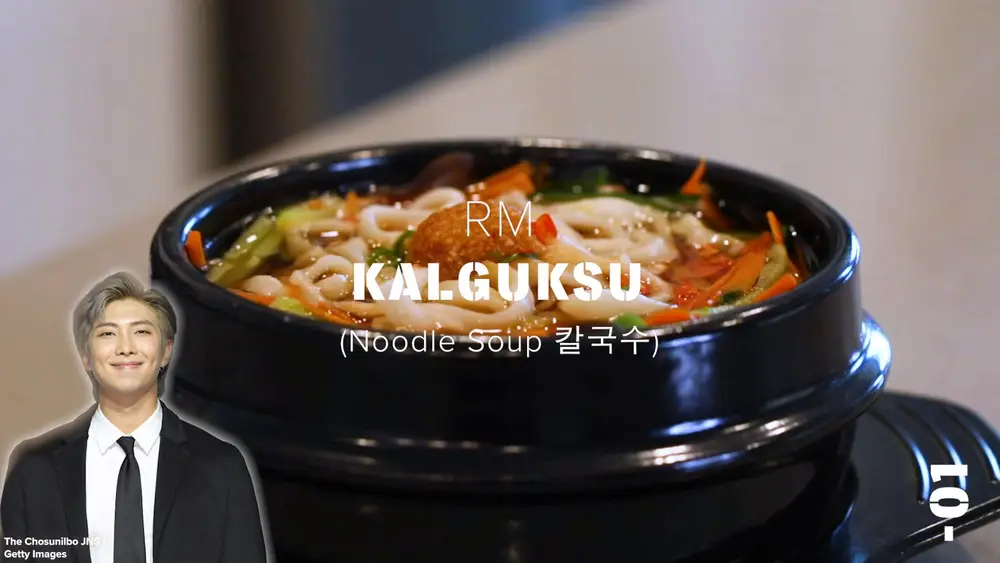

Kim Namjoon: Quick Korean Knife-Cut Noodle Soup (Kalguksu)
Can’t get enough of BTS? Try one of RM’s favorite foods: Korean knife-cut noodle soup.
Ingredients
Broth
- 6 cups water(1.4 L)
- 4 dried anchovies
- 1 dried kombu, kelp, 3 in (7.6 cm)
- 1 medium zucchini, cut into matchsticks
- 1 small carrot, cut into matchsticks
- 2 shiitake mushrooms, thinly sliced
Soup
- 16 oz fresh korean knife-cut noodles(450 g)
- green thai chile, to tase, chopped
- red thai chile, to taste, thinly sliced
- 1 teaspoon garlic, minced
- 2 tablespoons soy sauce, or to taste
- sea salt, to taste
- freshly ground black pepper, to taste
Preparation
- Make the broth: Add the water, anchovies, and kombu to a large pot. Bring to a simmer over medium heat.
- Add the zucchini, carrots, and shiitake mushrooms and cook for 4–5 minutes, until the vegetables are tender. Remove the pot from the heat and set aside.
- Make the soup: Meanwhile, bring a medium pot of water to a boil. Add the noodles and cook until tender, about 3 minutes, stirring to keep the noodles from sticking to each other. Rinse the noodles under cold water to stop the cooking process.
- Add the cooked noodles to the broth and bring to a boil. Cook for about 1 minute to heat the noodles through.
- Ladle the soup into bowls and top with green and red Thai chiles, garlic, soy sauce, salt and pepper.